What is Do Not Track?
DNT is a web browser setting that requests that a web application disable its tracking of an individual user. When you choose to turn on the DNT setting in your browser, your browser sends a special signal to websites, analytics companies, ad networks, plug in providers, and other web services you encounter while browsing to stop tracking your activity.

You are being tracked
Your browser is telling sites that you affirmatively want to be tracked.
Adjust SettingsHow Do Companies Use It?
There is no consensus yet on how the companies you encounter should interpret DNT. As a result, most sites do not currently change their practices when they receive a DNT signal.
Learn MoreHow Do Companies Use It?
There is no consensus yet on how the companies you encounter should interpret DNT. As a result, most sites do not currently change their practices when they receive a DNT signal. Some companies may refrain from personalizing ads they show you. Others may limit the ways they collect information about your browsing activities. Click here for a specific list of companies that have publicly committed to honor the Do Not Track header. Visit our DNT Implementers page for an example of how one company interprets the DNT setting on a more technical level.
The Future of DNT
Although there is no universally-agreed upon standard for what a company should do when it detects a DNT signal, an international working group is attempting to create a consensus interpretation.
Learn MoreThe Future of DNT
Although there is no universally-agreed upon standard for what a company should do when it detects a DNT signal, an international working group of policy advocates, technical experts, and companies is attempting to create a consensus interpretation. For more information about this effort, visit the W3C Tracking Protection Working Group.
Additionally, new technologies now allow venues such as airports, stores, and hotels to receive signals from devices that are in or near them. Mobile location analytics companies that have agreed to FPF’s Mobile Location Analytics Code of Conduct will honor the requests of consumers who wish to opt-out of having their location collected. Consumers can opt-out by entering their phones’ Wi-Fi or Bluetooth MAC address at smartstoreprivacy.org.

Adjust Settings for Mobile Devices
Leading mobile internet browsers support DNT in various ways. Click on your mobile browser to reveal how to adjust its DNT feature.
-
Opera
Opera’s Mini Browser does not currently have a Do Not Track feature available.
-
Firefox
Firefox’s Do-not-track feature is turned off by default. To turn it on, scroll and find the Settings application. Find and tap the Do Not Track item, under the Privacy & Security category. Tap the circle right of the Do Not Track label to enable or disable this feature.
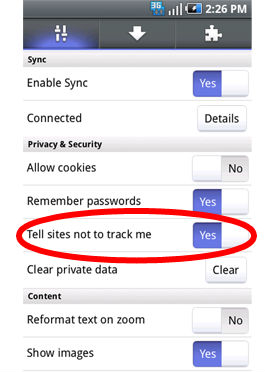
-
Internet Explorer 10
- For Windows Phone 8: In the App list, tap Settings, flick left to Applications, tap Internet Explorer, and then tap Advanced Settings. Then select or clear the “Send a Do Not Track request to websites you visit” check box to enable or disable this feature.
- For Windows Phone 7: In Internet Explorer, tap More > Settings. (You can also access Internet Explorer’s settings through Settings on the App list.) From there you can select or deselect “Allow Internet Explorer to collect my browsing history.”
-
Chrome
To turn on or off DNT in Chrome, go to Chrome menu > Settings > (Advanced) Privacy, then select your preferred option for “Do Not Track.”
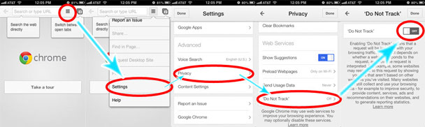
-
Safari
There are two ways to turn on Do Not Track on iOS. On iOS 6 or 7, you can adjust Safari’s Do Not Track setting is in Settings > Safari > “Private Browsing.” (On iOS 7, the setting is simply labeled “Do Not Track.”) Enabling private browsing will also turn on Do Not Track.
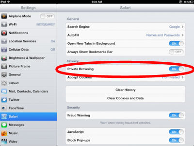
iPad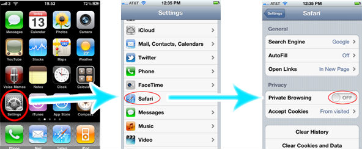
iPhone running iOS 6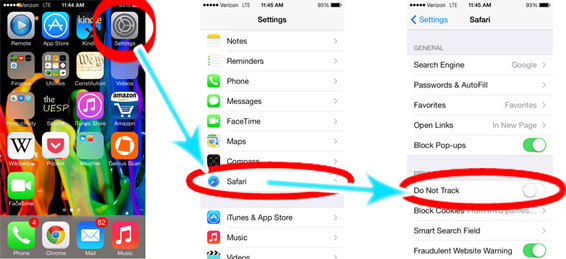
iPhone running iOS 7In addition, you can also enable Do Not Track on iOS 7 through the Safari Browser itself: to do this, open Safari and tap the tabs icon on the lower right hand corner. Then tap the lower left hand corner marked “Private” to enable Private Browsing for that session. Doing so also enables Do Not Track.
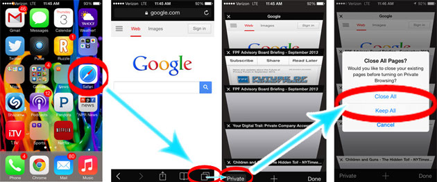
iPhone running iOS
In addition to browser controls, many phones have a separate DNT setting for mobile apps. Note that setting your browser to DNT does not necessarily affect your DNT setting for apps. To make sure you are not tracked, you must turn on BOTH of these options.
-
Apple iOS
For iPhones/iPads running iOS 6, you can Limit Ad Tracking for apps by navigating to Settings > General > About > Advertising > Limit Ad Tracking and turning the feature on.
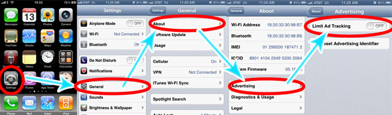
On iOS 7, the option is now also available at Settings > Privacy > Advertising. You can also manage the privacy settings for individual apps on iOS 6 or 7 by navigating to Settings > Privacy and selecting the type of data you would like to manage app settings for.
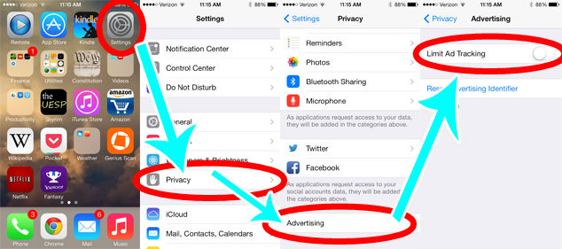
-
Android
Google’s new Advertising ID for apps is available for devices running Android 2.3 or later. In Google Settings, select “Ads” and you will see your Advertising ID, which is used to deliver targeted ads on apps. On this screen you can select the option to reset your ad ID, which functions essentially like clearing your cookies in a browser. Additionally, tap the box labeled “Opt Out of interest-based ads” to opt out.
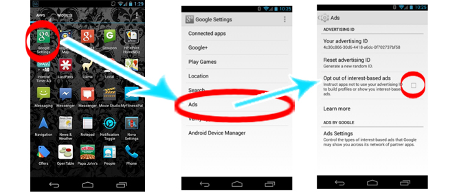
-
Windows OS
Windows does not currently offer granular privacy settings for apps.
-
Firefox OS
The Do-not-track feature is turned off by default. To turn it on, scroll and find the Settings application. Find and tap the Do Not Track item, under the Privacy & Security category. Tap the circle right of the Do Not Track label to enable or disable this feature.
Note that enabling DNT on the Firefox OS will send a signal to both the Firefox browser as well as individual apps that you do not wish to be tracked.

Adjust Settings for Desktop and Laptop
-
Opera
Opera’s Do Not Track setting is in Settings > Privacy and Security. Selecting the box labeled “Send a ‘Do Not Track’ request with your browsing traffic” will enable Do Not Track.
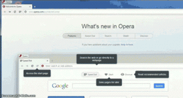
-
Google Chrome
PC and Mac: Click the “Tools” menu, represented by the icon with three horizontal lines on the upper right-hand side of the Chrome window, and then click Settings. At the bottom of the Settings page, click Advanced Settings. At the bottom of the page a “Privacy” heading appears. Under the Privacy heading, check the box next to “Send a ‘Do Not Track’ request with your browsing traffic.” Click OK to activate DNT.
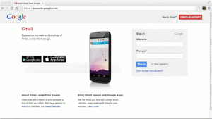
-
Internet Explorer 10
On the menu bar at the top of your screen, click the Tools button, which is shaped like a gear. Point to Safety, and then click Tracking Protection. Within the Tracking Protection List, Click Your Personalized List, and then click the Enable button that appears in the lower right-hand corner of the box.
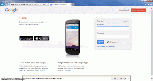
-
Internet Explorer 9
On the menu bar at the top of your screen, click the Tools button, which is shaped like a gear. Point to Safety, and then click Tracking Protection. Within the Tracking Protection List, Click Your Personalized List, and then click the Enable button that appears in the lower right-hand corner of the box.
-
Firefox 8
For PC: At the top of the Firefox window, click on the Firefox button and then select Options. Then, navigate to the Privacy tab and choose “Tell sites that I do not want to be tracked.” Click OK to close the Options window and enable DNT.
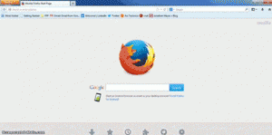
For Mac: On the menu bar at the top of the screen, click on Firefox > Preferences. Navigate to the Privacy tab and choose the option “Tell web sites I do not want to be tracked” to enable DNT.
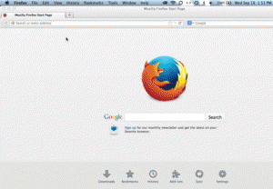
For Linux: At the top of the Firefox window, click Edit > Preferences. Then, navigate to the Privacy tab and either check or uncheck the box labeled “Tell web sites I do not want to be tracked” to enable or disable this feature.
-
Safari
For Safari 6, adjust DNT settings by completing the following steps: On the menu bar at the top of the screen, click on Preferences. Navigate to the Privacy tab, then check or uncheck the box labeled Website tracking: “Ask websites not to track me.”
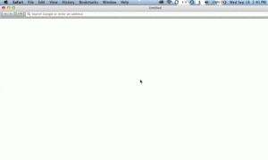
For earlier versions of Safari, adjust DNT settings by completing the following steps: On the menu bar at the top of the screen, click on Preferences. Select the Advanced Preferences panel, then check the box at the bottom of the menu labeled “Show Develop menu in menu bar.” On the menu bar at the top of your screen, you should now see the category “Develop.” Click on it, then click on “Send Do Not Track HTTP Header” to enable or disable DNT.

Why Do Companies Track You?
Web services track users for a wide variety of reasons. Websites and analytics companies may track to know how many unique users visit their sites, or to learn how users navigate within a site. Advertising networks may track you in order to measure the effectiveness of the ads they serve, or to create a web surfing profile for you that is used to create more personalized ads.
Learn MoreWhy Do Companies Track You?
Web services track users for a wide variety of reasons. Web sites and analytics companies may track to know how many unique users visit their sites, or to learn how users navigate within a site. Advertising networks may track you in order to measure the effectiveness of the ads they serve, or to create a web surfing profile for you that is used to create more personalized ads. A mobile advertiser promoting an app may track you on your mobile devices in order to understand which of their ad campaigns resulted in more downloads of their app.
Tracking is also used to prevent fraud. For example, an online bank might use tracking techniques to detect that a certain web browser is trying to log in to an account from an unfamiliar location. An ad network that gets paid by the number of users that click might also track in order to recognize fake clicks generated by computer bots.
There is a wide range of views on the benefits and privacy implications of tracking. You can find industry views at Ad Choices or at the Network Advertising Initiative. You can find the views of some privacy and technology experts at donottrack.us. For the views of Future of Privacy forum leaders, visit our Do Not Track page.
You can also see your own browsing profile on a number of sites. In addition to Google and Yahoo’s pages, you can also see your profile with ad network BlueKai.
Privacy Tools
Below are a few examples of tools you can download to further manage their privacy preferences:


Tracking Options
The Network Advertising Initiative offers a central site where you can opt-out of certain kinds of tracking or ad targeting by its members.
The Digital Advertising Alliance (DAA) provides a consumer opt-out page for the companies participating in their Self-Regulatory Program for Online Behavioral Advertising.
Some leading companies provide their own opt-out mechanisms for their registered users. For example, at these links you can control your opt-outs for Google, for Microsoft, and for Yahoo!.